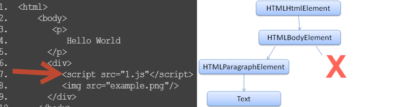
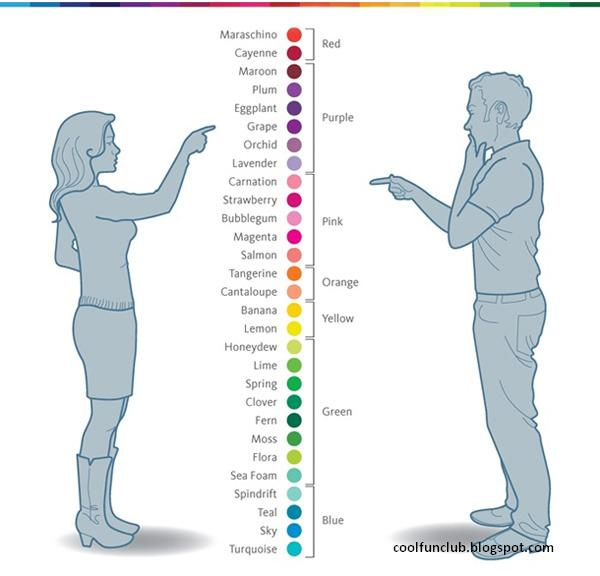
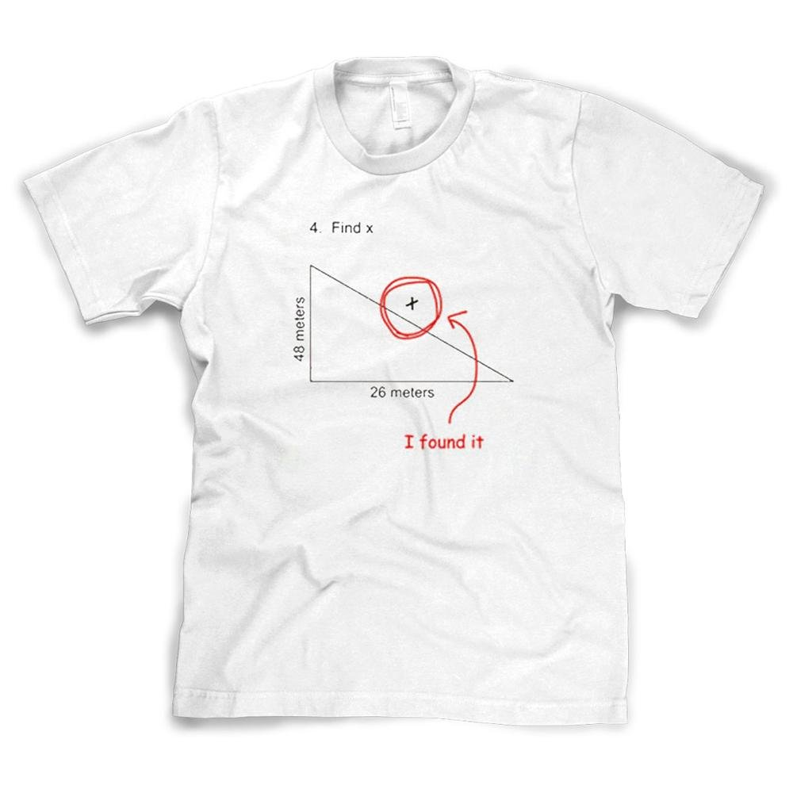

High Perf JS
Performance is never ending

before we start
- browsers are changing, everyday
- Standard spec are changing
- not tested all possible use cases
- Don't accept, "Don't Do this"
- Ask, Why i should not do it
- Then verify it in your use case
why performance

you hate spinner,
so does your client
long running error


How you get a website
Websites


High Perf Network

High Perf Network

HTML
Your Html
1. <html>
2. <body>
3. <p>
4. Hello World
5. </p>
6. <div>
7. <img src="example.png"/>
8. </div>
9. </body>
10. </html>

Style
p,div{
margin-top:3px;
}
.error {
color:red;
}

Render Tree

So far

Layout
 CSS Layout Engines
CSS Layout Engines
Paint

JavaScript
inline script
1. <html>
2. <body>
3. <p>
4. Hello World
5. </p>
6. <div>
7. <script type ="text/javascript">
8. console.log('inline script');
9. </script>
10. <img src="example.png"/>
11. </div>
12. </body>
13. </html>
external script
1. <html>
2. <body>
3. <p>
4. Hello World
5. </p>
6. <div>
7. <script src="1.js"></script>
8. <img src="example.png"/>
9. </div>
10. </body>
11. </html>
script in html
- No UI update while JS executes
- Long-running script => Unresponsive UI
load and execution order
how u add JavaScript
<script src="1.js"></script>
<script src="2.js"></script>
- will not start parsing and executing 2.js before 1.js is downloaded, parsed and executed
- because browser has to maintain code dependency
browserscope:Network
html5rocks: script-loading
Network
Every byte counts

Every byte will bite!
1. Minify
//205 bytes
//When I wrote this, only God and I understood what I was doing
//Now, God only knows
var myFancyObject = {aaaa:1, bbbb:2, cccc:3}
function logEverything(obj) {
console.log(obj);
}
logEverything(myFancyObject);
//103 bytes
var myFancyObject={aaaa:1,bbbb:2,cccc:3};function logEverything(a){console.log(a)}logEverything(myFancyObject);
//23 bytes
console.log({a:1,b:2,c:3});2. Combine
<script src="underscore.js" type="text/javascript"></script>
<script src="jquery.js" type="text/javascript"></script>
<script src="backbone.js" type="text/javascript"></script>
<script src="upperscore.js" type="text/javascript"></script>
<script src="frontbone.js" type="text/javascript"></script>
<script src="allScripts.js" type="text/javascript"></script>
CommonJS, Require JS, Grunt!, Yo
3. Load Less
load as little as possible
if u need it later load later or async
Async Vs Defer
Dont block
<script src="file-a.js"></script>
<script src="file-b.js" defer></script>
<script src="file-c.js" async></script>

html5rocks: load-script, Async Vs Defer
Small in line
Quick render: Good for Mobile device
4. Right Order
<!doctype html>
<html>
<head>
<link rel="stylesheet" href="reveal.css">
<head>
<body>
<div class="awesomeDiv">
<h2>unnecessary title</h2>
<div>
<p>unnecessary content</p>
</div>
</div>
<script src="allScripts.js">
</body>
<html>
Style on Top
Script on bottom
Properly include style and scripts
5. Cache
browser or CDN

6. gZip

7-zip
Summary
- Minify
- Combine
- Load less
- Right order
- Cache
- gZip
High Performance Browser Network
Client side

Things to do or not to

JS: advices
- jsLint, jsHing
- Best Practice
- standard
- What does the Boss say?
- framework suggestion
- Random guy in JS meetup
Performance trap

performance improvement strategy
- Understand the situation/ use case
- Is it a performance/ design problem?
- Don't blindly go for blog/ talk/ boss
- Measure it (before, after)
- Make sure u understand after 6 months
how many colors are there?

String

String Concatenation
var tinyMessage = 'Trust me, i started one line' +
'Designer told me he wants little more' +
'I added little more' +
'Manager said, this is not enough' +
"He didn't said what to add" +
'Just said add' +
"I didn't know what to add" +
'So i added a slice of pizza';
var tinyMessage = ['Trust me, i started one line',
'Designer told me he wants little more',
'I added little more',
'Manager said, this is not enough',
"He didn't said what to add",
'Just said add',
"I didn't know what to add",
'So i added a slice of pizza'].join(' ');
primitive vs Object
var strPrimitive = 'Hello';
var strObject = new String('Hello');
primitive is faster
- length
- charAt()
- indexOf()
- toUpperCase()
- concatenate
MDN: performance of JS String Object
string to number
//constructor
Number("13268");
//parseInt
parseInt("13268");
//unary +
+"13268";
//parseInt with base
parseInt("13268", 10);
//bitwise >> (right shift)
"13268" >> 0;
JavaScript execution
javaScript execution
- Single threaded.
- Synchronous execution
- 1 Global context
- Infinite function contexts
Each function call creates a new execution context, even a call to itself.
executiuon contextglobal scope
var a = 2;
function b(){
console.log(a);
} 
local scope (execute function)
var a = 2;
function b(){
console.log(a);
}
b(); JS scope chain
multi execution context
var a = 2;
function b(){ console.log(a); }
function c(){ console.log(a); }
b();
c();new scope is created even a function call itself
Everything you wanted to know about scopenested function (closure)
var a = 2;
function b(){
var d = 21;
function dog(){ console.log(a); }
dog();
}
function c(){ console.log(a); }
b();
c(); Everything you wanted to know about scope
Everything you wanted to know about scope
hoisting
function() {
var bar = function() {
return 'world';
};
function foo() {
return 'fooed';
}
var a = 5;
}
function() {
function foo() {
return 'fooed';
}
var bar;
var a;
a = 5;
bar = function() {
return 'world';
};
} local variable
store out of scope variable
var myArr = [0, 1, 2,3 4, 5 ...];
function useGlobal() {
for (j = 0; j < 1000; j++)
console.log(myArr[j]);
}
function useLocal() {
var localArr = myArr;
for (var k = 0; k < 1000; k++)
console.log(localArr[k]);
}
cache outside for loop
for(var i = 0; i < someArray.length; i++) {
var container = document.getElementById('container');
container.innerHtml += 'my number: ' + i;
console.log(i);
}
when value doesnt change
var container = document.getElementById('container');
for(var i = 0; i < someArray.length; i++) {
container.innerHtml += 'my number: ' + i;
console.log(i);
}
Array
when to use Array
- Same Type
- Use Full Array
- Avoid Pre-allocate, Grow as you Go
var a = []; // empty
var b = new Array(); //empty
var c = [1,2];
var d = new Array(5); // array of size 5
var e = new Array(5, 10); //array of two element
why [] faster, Sparse vs Full Arrays
push vs assign
var a = [], b = [];
//push
for (var i = 0; i<1000; i++){
a.push(i);
}
//assign by index
for (var j = 0; j<1000; j++){
b[j] = j;
}
be careful with assign
var myArr = [1, 2, 3, 4];
myArr[68] = 69;
myArr.length; //69
myArr; //[1, 2, 3, 4, undefined × 64, 69]
var myArr = [1,2,3,4];
myArr[-7] = -7;
myArr[2.5] = 3.5;
myArr['myDude'] = 'thatJSDude';
myArr.length;//4
myArr; //[1, 2, 3, 4]
these becomes property of myArr
Array: that js dudepush multiple
var a = [1, 2];
a.push(3, 4, 5);
a; // [1, 2, 3, 4, 5]
a.unshift(0);
a.unshift(-2, -1);
a; //[-2, -1, 0, 1, 2, 3, 4, 5]
var b = [1, 2, 3, 4, 5, ...];
b.indexOf(669);
b.indexOf(669, 500);
b.lastIndexOf(303);
b.lastIndexOf(303, 500);
Array summary
- [] is faster than new Array()
- a[index] is faster a.push
- push, unshift multiple
- fromIndex of indexOf
- prefer new array over many splice
loop


for loop (mostly used)
for(var i = 0; i < 5; i++){
console.log(i);
}
for(initiation; iteratingCondition; repeatingExpression){
repeatingCode;
}
all parts are optional
but u have to put the semicolon
initiation;
would be executed only once
var myArr = [1, 2, 3, 4, 5];
for(var i =0; i< myArr.length; i++){
console.log(myArr[i]);
}
//length is calculated once
for(var i =0, len = myArr.length; i<len; i++){
console.log(myArr[i]);
}
var myArr = [1, 2, 3, 4, 5],
i = 0,
len = myArr.length;
for ( ; i < len; i++ ) {
console.log(myArr[i]);
}iteratingCondition
var myArr = [1, 2, 3, 4, 5],
len = myArr.length;
for(var i =0; i<len && i<3; i++){
console.log(myArr[i]);
}
//do as little as possible in each loop
//will see an example in future
forward or backward
var myArr = [0,1,2,3,4,5 ...];
//forward
for(var j = 0; j<1000; j++){
console.log(myArr[j]);
}
//backward
for(var k = 1000; k>=0; k--){
console.log(myArr[k]);
}
dont worry about it for a smaller array
js perf: backward testfor loop backward
cache function
var arr = [];
for (var i = 0; i < 1000; i++) {
arr.push([1, 2, 3].map(function (x) { return x * x; }));
}
var arr = [];
var sq = function (x) { return x * x; };
for (var i = 0; i < 1000; i++) {
arr.push([1, 2, 3].map(sq));
}
filter vs if
var myArray = [{"number":1,"name":"Fred"},{"number":2,"name":"John"},{"number":3,"name":"Toni"},{"number":4,"name":"Sarah"}];
function byFilter(myArr, num){
return myArr.filter(function (el) {
return el.number === num;
});
}
function byForLoop(myArr, num){
var i, l;
for (i = 0, l = myArr.length; i < l; i += 1) {
if (myArr[i].number === num) {
return [myArr[i]];
}
}
return [];
}For-in, while

enumerates inherited properties
var myObj = {a:1, b:2, c:3};
for(var key in myObj){
console.log(myObj[key]);
}
// 1, 2, 3var myObj = {a:1, b:2, c:3};
var mySon = Object.create(myObj);
mySon.d = 4;
mySon.e = 5;
for(var key in mySon){
console.log(mySon[key]);
}
// 4, 5, 1, 2, 3for(var key in mySon){
if(mySon.hasOwnProperty(key)){
console.log(mySon[key]);
}
}
//4, 5cache hasOwnProperty
var i,
obj = {},
hasOwn = Object.prototype.hasOwnProperty;
for(var j = 0; j<10000; j++){
obj[j] = j;
}
for (i in obj) {
if (hasOwn.call(obj, i)) {
console.log(i, ":", obj[i]);
}
}
not a performance gain for modern browsers
cache hasOwnPropertyfor vs for-in
var myArr = [1, 2, 3, 4, 5, ... ];
//faster
for(var i =0; i<1000; i++){
console.log(myArr[i]);
}
//than
for(var j in myArr){
console.log(myArr[j]);
}
dont use for-in while traversing on an array
for vs for-in

stepping through long loop while debugging
from: Addy Osmani (g+)
while, do while
var myArr = [1,2,3,4,5,6,7,8,9],
len = myArr.length,
i =0;
while (i++ < len) {
console.log(myArr[i]);
}
//do while
do {
someFn(arr[i]);
} while (i--);
var l = arr.length;
while(l--) {
someFn(arr[l]);
}
different looping
summary of looping
- don't measure length in every iteration
- cache object properties, function used in repeatingCode
- backward for loop is faster than forward
- for-in only when iterating over object
- on array, reverse while is the fastest
so far

Summary
- parseInt is the fastest way to convert string to number
- primitive is faster than constructor
- local variable is faster than out-of scope variable
- push, unshift multiple
- consider fromIndex while using indexOf
- simple for loop is faster than built in filter
- reverse while is the fastest to iterate array
any question?
is it hard to
Improve
Performance?


DOM

DOM query
DOM query
- getElementById
- getElementsByClassName
- getElementsbyTagName
- querySelector
- querySelectorAll
querySelectorAll
myArray --> Array.prototype --> Object.prototype --> null
myNodeList --> NodeList.prototype --> Object.prototype --> null
//loop and put them in a array
// or go to the MDN: NdeList link below
//or
var nodesArray = Array.prototype.slice.call(myNodeList);What to use
<div>
<article>
<p></p>
</article>
<article >
<span id="myId" class="myClass">my text</span>
</article>
</div>
- getElementById('myId') is the fastest
- querySelectorAll('#myId')[0] is the slowest
selector api comparison
Cache
var blah = document.getElementById('myID');
var blah2 = document.getElementById('myID2');
var blah3 = document.getElementById('myID3');var doc = document,
blah = doc.getElementById('myID'),
blah2 = doc.getElementById('myID2'),
blah3 = doc.getElementById('myID3');<div class="awesome-selector">
<div class="inner-1"></div>
<div class="inner-2"></div>
<div class="inner-3"></div>
</div>
var awesome = document.querySelector('.awesome-selector');
var h1 = awesome.querySelector('.inner-1');
var h2 = awesome.querySelector('.inner-2');
var h3 = awesome.querySelector('.inner-3');
selector render speed

render speed (desc)
- ID - #myID
- Class – .myClass
- Tag – div
- Sibling – div + p, div ~ p
- Child – div > p
Efficient CSS Selector
Speed getting slower
- Descendant – div p
- Universal – *
- Attribute – input[type="checkbox"]
- Pseudo – p:first-child
Faster HTML and CSS
select by attribute value
<div>
<span data-control="true">Something, Darkside</span>
</div>
document.querySelectorAll('[data-control]');
<div>
<span class="data-control" data-control="true">Something, something, something, Darkside</span>
</div>
document.getElementsByClassName('data-control');
Manipulate DOM
Avoid Change
- Minimum change
- Don't change Layout
- Change Background Color
- Change Text Color
- Visibility: hidden
paint and layout
Re paint

More Changes => More Work
- Change Layout
- Change Width / Height
- Change Font
- Move DOM Node
- Resize Window
- Display: none
Styles that affect layout Re flow Layout
Re Flow

Create DOM
ways to create DOM
var ul = document.getElementById('myList');
el.innerHTML = '<li>Only one item</li>';
remove all elements, parse string, assign as children
var li = document.createElement("li");
var text = document.createTextNode('Only one Item');
li.appendChild(text);
ul.appendChild(li);
var li = document.createElement("li");
var text = document.createTextNode('Only one Item');
li.appendChild(text);
ul.appendChild(li);
more changes
var list = ['foo', 'bar', 'baz'],
el, text;
for (var i = 0; i < list.length; i++) {
el = document.createElement('li');
text = document.createTextNode(list[i]);
el.appendChild(text);
document.body.appendChild(el);
}
var fragment = document.createDocumentFragment(),
list = ['foo', 'bar', 'baz'],
el, text;
for (var i = 0; i < list.length; i++) {
el = document.createElement('li');
text = document.createTextNode(list[i]);
el.appendChild(text);
fragment.appendChild(el);
}
document.body.appendChild(fragment);cloneNode
<div>
<span id="childSpan">original child</span>
</div>
<div>
<span id="fakeSpan">foo bar</span>
</div>
var orig = document.getElementById('childSpan'),
clone = orig.cloneNode(true),
target = document.getElementById('fakeSpan');
clone.setAttribute('id', 'newChild');
//.replaceChild(newChild, oldChild);
target.parentNode.replaceChild(clone, target);
DOM vs innerHTML
Templating JS vs Mustache
//add code example here
Mustache Manual
JS templating shootoff: important
Summary
- Minimize the size of DOM
- avoid modifying while traversing
- Dont ask for size while changing
- Clone Node and dereference after clone
- Minimize reflow and repaint
- css class vs style attribute
Dom isnt slow you are
Events

Bubble demo, w3: event flow (image)
event delegate
<ul id="listToDestroy">
<li><a href="#">first item</a></li>
<li><a href="#">second item</a></li>
<li><a href="#">third item</a></li>
<li><a href="#">forth item</a></li>
<li><a href="#">Fifth item</a></li>
</ul>
<script type="text/javascript">
document.getElementById('listToDestroy').addEventListener('click', function (e) {
var elm = e.target.parentNode;
elm.parentNode.removeChild(elm);
e.preventDefault();
});
</script>event delegate (demo)
events attached to a dom
//log all the event listener attached to el
getEventListeners(el);
//monitor every single event
monitorEvents(el);
//monitor some events
monitorEvents(el, 'click');
monitorEvents(el, ['click', 'focus', 'keyup']);
//unmonitor
unmonitorEvents(el);
Debounce & Throttle
Defer
Debounce: Example
- object creation is faster than function
- new method in prototype is available to all
- iterate every properties in a level then go to next
- Higher lookup time for higher level properties
- nonexistent properties traverse full chain
- dont check undefined. use
hasOwnProperty
best way to inheritance
- It depends.
- prototypal inheritance performs better
- But dont make it crazy long
- Choice is yours
- depending on you project, team
function vs prototypal , perf test
inheritance antipattern
closure
function inside function
var a = 2;
function b(){
var d = 21;
function dog(){ console.log(a); }
dog();
}
function c(){ console.log(a); }
b();
c();how it works
function counter(){
var i = 0;
return function(){
return i++;
}
}
var a = counter();
a(); //0
a(); //1
a(); //2
a(); //3
a(); //4
a(); //5
var b = counter();
b(); //0
b(); //1
b(); //2
b(); //3every assignment of counter creates new closure
a and b has separate private i to remember position
closure creation

private variable
save state
closure create encapsulation
multiple closure

each closure have separate private variable
Who care?
- holding function reference: call to counter can not be garbage collected
- How many closure you are creating
- variable reference: Dont use excessively large private variable
- Unnecessary closure affect processing speed and memory consumption
function a() {
var largeStr = new Array(1000000).join('x');
return function () {
return largeStr;
};
}
IE8: memory leaks
so far
summary
- getById, Class, Tag is faster than querySelectorAll
- use efficient css selector
- appendChild is faster than innerHTML
- use documentFragment, cloneNode
- Minimize layout reflow
- Delegate Events
- Inheritance: Object.create
- Closure: avoid memory leak
any question?

Momoization
Memoization
function fibonacci(n) {
return n < 2 ? n : fibonacci(n - 1) + fibonacci(n - 2);
};
for (var i = 0; i <= 10; i += 1) {
console.log( i + ': ' + fibonacci(i));
}
// 0: 0
// 1: 1
// 2: 1
// 3: 2
// 4: 3
// 5: 5
// 6: 8
// 7: 13
// 8: 21
// 9: 34
// 10: 55 every call itself creates new scope
JavaScript: Good Parts
var fibonacci = (function () {
var memo = [0, 1];
var fib = function (n) {
var result = memo[n];
if (typeof result !== 'number') {
result = fib(n - 1) + fib(n - 2);
memo[n] = result;
}
return result;
};
return fib;
})();
General Memoization
Function.prototype.memoize = function(){
var self = this, cache = {};
return function( arg ){
if(arg in cache) {
return cache[arg];
} else {
return cache[arg] = self( arg );
}
}
}
function fooBar(a){ ... }
var memoFooBar = fooBar.memoize();
memoFooBar(1); // calculated and cache
memoFooBar(1); // returned from cache
memoFooBar(2); // calculate and cache
Garbage

reference
function test(){
var myString = 'a new string';
}
test();
var anotherStr;
function test(){
var myString = 'a new string';
anotherStr = myString;
}
test();
GC cant remove anotheStr
Garbage collector friendly codememory hold by object
- object itself
- refernce holding

JS memory
JS: Garbage collection
- Don't hold object u dont need
- use appropriate scope (no/less global)
- unbind event listener after DOM removed
- clean locally cached data
Jank
Jank Invaders
animation
how things are animated?
function animateFn(){/* some fancy animation */ }
var timeId = setInterval(animationFunction, 10);
//when done clearTimeId
clearInterval(timeId);
function move(elem) {
var left = 0;
function frame() {
left++;
elem.style.left = left + 'px';
if (left == 100)
clearInterval(timeId)
}
var timeId = setInterval(frame, 10); // draw every 10ms
}
animations perf
- elements have position: static (by default)
- animation cause reflow (expensive)
- Try to avoid reflow (smoother, less CPU)
- position: absolute/ fixed for Elements to animated
- repaint not reflow
- put multiple animation in same timer (same loop)
performance tooling, high perf animation, Jank Free
css vs js animation, Debug-Fix Jank
requestAnimationFrame
- browser optimize for smoother animations
- dynamically adjust to keep frame rate normal
- inactive tabs will not animate (save CPU)
- More battery-friendly
raf: tutorial, sub millisecond precision
Scroll
scroll, scrollTO
//scroll down 100 pixels
scroll(0, 100);
scrollTo(x-coord,y-coord );
//repeated scroll
scrollBy(0, 100);
window.onscroll = function(e) {
// do something on scroll
}
things to do
avoid unnecessary Paints
External effect
(Demo: Something else make Scroll bad!)
Unnecessary repaint:
- position:fixed
- overflow:scroll
- :hover effect
- touch listeners
long paint:
painful repaint
JQuery
Selector Repetition
$('#myText').css("color", "blue");
$('#myText').css("font-size", "1.2em");
$('#myText').text("Text changed!");
//chain it or cache it
$('#myText').css({ "color": "blue", "font-size": "1.2em"}).text("Text changed!");
//better
.myClass{
color:blue;
font-size:1.2em;
}
//apply class not style
$('#myText').addClass('myClass').text("Text changed!");
Efficient JQuery Selector
Use Sub queries
<ul class="nav">
<li>List 1, item 1</li>
<li>List 1, item 2</li>
<li>List 1, item 3</li>
</ul>
<ul class="nav">
<li>List 2, item 1</li>
<li>List 2, item 2</li>
<li>List 2, item 3</li>
</ul>
$( "ul.nav li:eq(1)" ).css( "backgroundColor", "#ff0" );
//better
$( "ul.nav" ).each(function( index ) {
$( this ).find( "li:eq(1)" ).css( "backgroundColor", "#ff0" );
});15-powerful-jquery-tips
<ul id="resources">
<li><a href="http://developer.mozilla.org">MDN</a></li>
<li><a href="http://html5doctor.com">HTML5 Doctor</a></li>
<li><a href="http://html5rocks.com">HTML5 Rocks</a></li>
</ul>
$( "#list a" ).on( "click", function( event ) {
event.preventDefault();
console.log( $( this ).text() );
});Doesn't work if you add a new list item
$( "#list" ).on( "click", "a", function( event ) {
event.preventDefault();
console.log( $( this ).text() );
});
JQuery Event Delegation
simultaneous ajax
multiple ajaxYou might not need
JQuery
Are you ready?
$(document).ready(function () {
console.log('document is ready. I can sleep now');
});Script as Last Tag of body
document.addEventListener('DOMContentLoaded', function(){
console.log('document is ready. I can sleep now');
});
document.onreadystatechange = function () {
if (document.readyState == "complete") {
console.log('document is ready. I can sleep now');
}
}Copy ready: function from JQuery
5-things-you-should-stop-doing-with-jquerydeal with class
$(el).addClass('hide');
$(el).removeClass('hide');
$(el).toggleClass('hide');
$(el).hasClass('hide');
//IE9+
el.classList.add('hide');
el.classList.remove('hide');
el.classList.toggle('hide');
el.classList.contains('hide');
jQuery helpers
$(el).hide();
el.style.display = 'none';
$(el).show();
el.style.display='';
$(el).html();
el.innerHTML;
$(el).html(setString);
el.innerHTML = setString;
$(el).empty();
el.innerHTML = '';
$(el).text();
el.textContent;event listener
$(el).on(eventName, eventHandler);
$(el).on('click', function(e){
console.log(e.target);
})
//remove event
$(el).off(eventName, eventHandler);
//IE9+
el.addEventListener(eventName, eventHandler);
el.addEventListener('click', function(e){
console.log(e.target);
});
el.removeEventListener(eventName, eventHandler);
DOM manipulation
$(el).parent();
$(el).children();
$(el).next();
$(el).prev();
$(parent).append(el);
$(el).remove();
$(el).clone();
el.parentNode;
el.children;
el.nextElementSibling;
el.previousElementSibling
parent.appendChild(el);
el.parentNode.removeChild(el);
el.cloneNode(true);
Is JQuery is Dead?
- Older Browser
- Browser Bugs
- use modular (sizzling)
- querySelctorAll dont have map, each, filter
- Angular, Backbone uses Jquery
- lazy (dont want to larn new framework)
Decide based on your situation
so far

summary
- memoize expensive static computation
- Don't hold unnecessary object (garbage it)
- requestAnimationFrame optimize animation
- window.onscroll try to avoid event handler with
- native vs JQuery (browser support)
- Do u really need full Jquery or some module
any question?
Global Variable
Reduce Global
var current = null;
function init(){...}
function change(){...}
var myNameSpace = {
current:null,
init:function(){...},
change:function(){...}
}
(function(){
var current = null;
function init(){...}
function change(){...}
})();
Develop with Namespace
combined var
var foo,
fooed
fooled;
var p = 9,
q = 10;
r = 11;
var a = 7,
b = c = 6;
// Non-strict code...
(function(){
"use strict";
var a = 7,
b = c = 6;
})();
ReferenceError: c is not defined
try-catch

Re-think try-catch
function tryCatch(obj) {
try {
return obj.prop;
} catch (ex) {
return null;
}
}
function ifCheck(obj) {
if (obj !== undefined) {
return obj.prop;
} else {
return null;
}
}
JSPerf: try-catch vs if check
== or ===
What the difference?
== and != try to coerce values before comparing (can lead to unexpected results)
=== and !== don't do any coercion (generally safer)
jshint#eqeqeq: prohibits the use of == and != in favor of === and !==.
older browsers === and !== was faster (not in modern browser)
js hint options, equality perf testHow == works?
[0] == true;
//convert boolean using toNumber
[0] == 1;
//convert object using toPrimitive
//[0].valueOf() is not a primitive so use...
//[0].toString() -> "0"
"0" == 1;
//convert string using toNumber
0 == 1; //false!
"potato" == false; //false
"potato" == true; //false
"potato" == true;
//convert boolean using toNumber
"potato" == 1;
//convert string using toNumber
NaN == 1; //false!
"potato" == false;
//convert boolean using toNumber
"potato" == 0;
//convert string using toNumber
NaN == 0; //false!
Which one? === or ==
0 == ''; // true
0 === false; //false
if (( x === null) || (x === undefined)){ ... }
if(x == null) { ... }
When you don't actually know whether they are same type
typeof thing == 'function'; //always be string
myArray.length == 0; //will always be number
mySting.indexOf('x') == 0;
Something for you
timeout for ajax call
var xhr = new XMLHttpRequest ();
xhr.open('GET', url, false);
xhr.onreadystatechange = function () {
if (this.readyState == 4) {
clearTimeout(timeout);
//success
}
}
var timeout = setTimeout(function () {
xhr.abort();
//timedout
},60000); // timeout after a minute
xhr.send();
Client-side storage
(If you need, google and read)
- cookies
- localStorage
- sessionStorage
- indexedDB
spec: Web Storage, spec: Indexed DB Remy Sharp: storing Data, MDN: DOM storage
multi-threaded JavaScript
its a browser feature
Know JavaScript Engine
- Know V8
- Hidden Class
- Avoid Memory Leaks
- Compile browser
Memory Efficient JS
Performance Test
Ways to test
- chrome task manager (shift + Esc)
- pageSpeed (network)
- webPageTest.org
- devtool - audit, network
- jsPerf.org
- Devtool- Console, timeline, profile
Console API
console.assert(myArray.length >5, "More than 5 elements");
//trace
console.trace();
profile('myProfile');
porfileEnd('myProfile');
function foo(){
console.count('fooed');
}
foo(); // fooed: 1
foo(); // fooed: 2
foo(); // fooed: 3
Console API
More Console
console.time("Array initialize");
var array= new Array(1000000);
for (var i = array.length - 1; i >= 0; i--) {
array[i] = new Object();
};
console.timeEnd("Array initialize");
var start = performance.now();
//execute your function
foobar();
var end = performance.now();
console.log(start - end +'ms');
Memory Profiling
JS Memory ProfilingLong paint times profiling
Effective Memory management
Leak Finder
chrome://tracing
Tracing paint operationsTracing Flag
Recap
Network Performance
- Minify
- Combine
- Load Less
- Right Order
- Cache (browser, CDN)
- gZip
runtime performance
- local variable is faster than out-of scope variable
- reverse while is the fastest to iterate array
- getById, Class, Tag is faster than querySelectorAll
- use documentFragment, cloneNode
- Delegate Events
- repaint is faster than reflow
- Don't hold unnecessary object (garbage it)
- Do u really need full Jquery or some module?
- devTool- audit, profile, timeline, console
Break Everything
I have said
\
/
As Long As YOU know what YOU ARE doing
Break All the Rules
Final Take Away
- Nothing is absolutely right
trust Tools, not Rules
Angus Croll: Break all the rules

Need more !!!
Performance Tuning SecretJavaScipt Ninja
UnderScore or Angular source code
asm.js: JS compile Target
Lo-dash
JS API index
You Don't Know JS
Free Tip

Thank You
http://bit.ly/1gx0FRU
MD Khan / @mdkhan005
Question?
 http://bit.ly/1gx0FRU
http://bit.ly/1gx0FRU